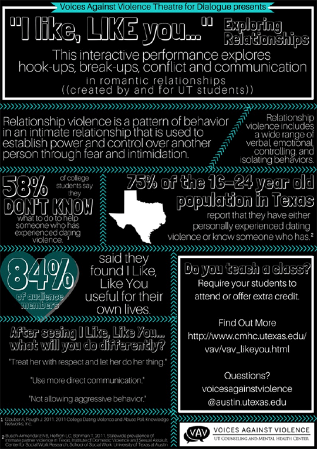
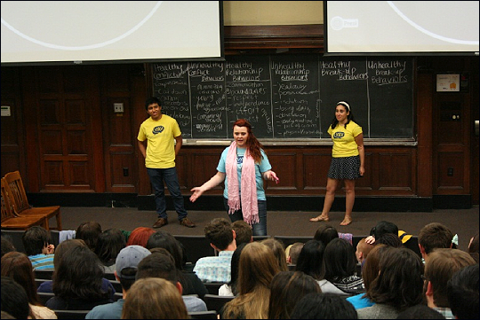
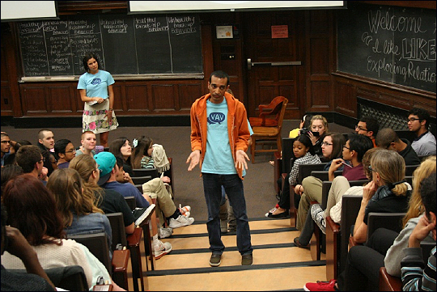
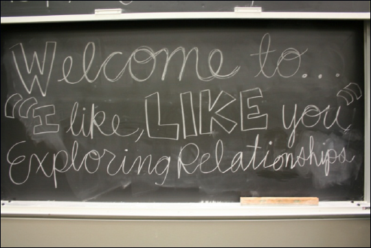
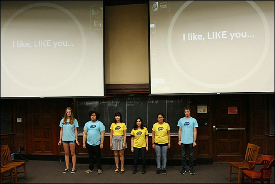
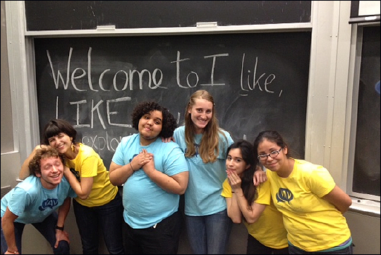

I like, LIKE you... © Exploring Relationships
I like, LIKE you... © Exploring Relationships is a VAV Theatre for Dialogue performance that examines hook-ups, break-ups, conflict and communication in romantic relationships. Characters explore a variety of relationship situations - how do relationships begin and end? How do both people get what they want, and what if they don't want the same thing? "I like, LIKE you..." uses performance and dialogue to ask the audience "what does a healthy relationship mean to you?"
85% percent of students who saw the "I like, LIKE you..." program found it valuable, and almost 70% plan to do something different in their relationships as a result of participating in the "I like, LIKE you..." program.
This program is presented by the Theatre for Dialogue academic class. Find out more here.
Click here to request a performance






Together we can build a safer campus
Book a Performance
Want your academic class, student organization or campus group to view a performance of "I like, LIKE you..."? Performances are FREE for all UT community members. For more information, please contact Lynn Hoare, Theatre for Dialogue Specialist at voicesagainstviolence@austin.utexas.edu or (512) 475-6989
Click here for more information about healthy relationships
This program is copyrighted and may not be used without permission. To discuss use of the name, content, or structure of the program, please contact voicesagainstviolence@austin.utexas.edu